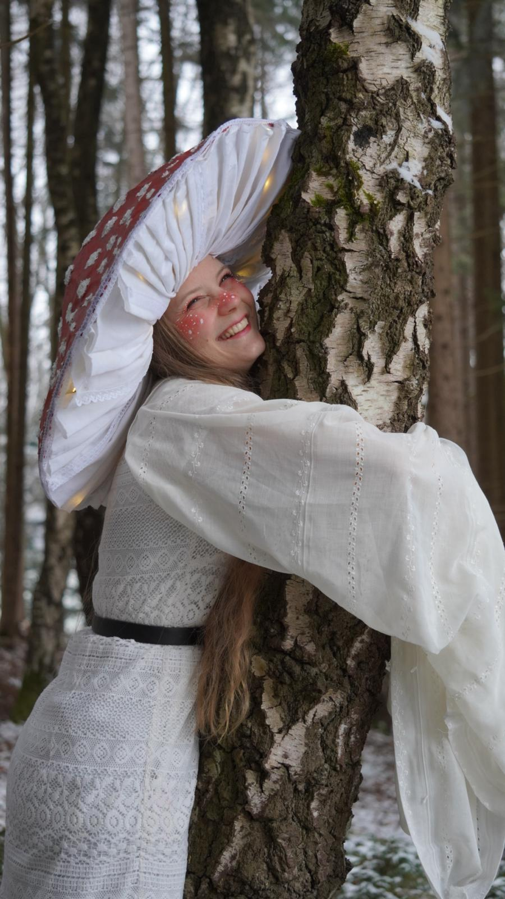
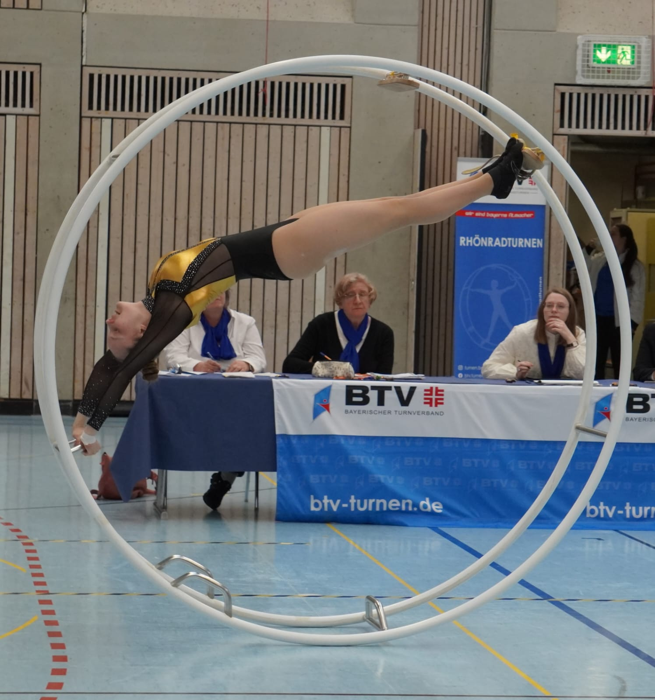

Galery
Animation
About me
Hi, ich bin Rebbi bin 21 Jahre alt und studiere seit 2025 Kunst und Multimedia an der LMU. In meiner Freizeit mach ich alle möglichen kreativen Dinge, wie zum Beispiel nähen, töpfern, malen und vieles mehr. Meine größte Inspirationsquelle ist die Natur. Ich setze mich total gerne auf ein Bank höre den Tieren aus dem Wald zu, schaue mir die Bege an und male auch gerne mit Aquarell in der Sonne.


Außerdem bin ich auch viel in der Halle zu finden. Da ich Rhönrad auf Wettkampfniveau turne, Rhönradtrainerin bin und Akrobatik mache. Mit meiner Gruppe Vaganti treten wir auch viel auf. Mein bis jetzt größter Auftrit war als Vorgruppe beim Feuerwerk der Turnkunst in der Olimpiahalle.